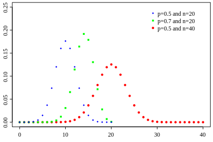

Variables aleatorias
LFIS 325 - 2022/02
Eloy Alvarado Narváez
Universidad de Valparaíso
07/10/22
Variables aleatorias
Una Variable aleatoria, es una función que permite trabajar cualquier espacio muestral de manera cuantitativa.
Definición: Se dice que \(X\) es una variable aleatoria si es una función que toma los elementos de \(\Omega\) y los transforma en puntos sobre la recta de los reales. Esto es: \[\begin{align*} X:\Omega \longrightarrow \mathbb{R}_x\\ \omega \longrightarrow X(\omega) \end{align*}\]
Tipos de variables aleatorias
Se dice que \(X\) es una Variable Aleatoria si es una función que toma valores en probabilidad, es decir, no se puede predecir con certeza sus resultados.
Una variable aleatoria es siempre cuantitativa y se puede clasificar en los siguientes grupos:
\[X(\omega) \begin{cases} \text{Discreto} \begin{cases} \text{Finito}\\ \text{Infinito} \end{cases}\\ \text{Continuo} \begin{cases} \text{Acotados}\\ \text{No Acotados} \end{cases} \end{cases} \]
Variables aleatorias discretas
Una variable aleatoria \(X\) es llamada discreta si:
- Su soporte \(R_X\) es un conjunto numerable.
- Existe una función \(p_X:\mathbb{R}\rightarrow [0,1]\), llamada la función de masa de probabilidad de \(X\), tal que, para cualquier \(x\in \mathbb{R}\):
\[p_X(x)\begin{cases} \mathbb{P}(X=x) \quad &\text{si } x\in R_X\\ 0 \quad &\text{si } x\notin R_X\end{cases}\]
Esta función tiene dos características principales:
- no-negatividad: \(p_X(x)\geq 0\) para cualquier \(x\in \mathbb{R}\).
- Suma sobre su soporte es 1: \(\sum_{x\in R_X}p_X(x)=1\)
Variables aleatorias continuas
Una variable aleatoria \(X\) es llamada continua si:
- Su soporte \(R_X\) es un conjunto no-numerable.
- Existe una función \(f_X:\mathbb{R}\rightarrow [0,1]\), llamada función de densidad de probabilidad de \(X\), tal que, para cualquier intervalo \([a,b]\subseteq \mathbb{R}\):
\[\mathbb{P}(X\in [a,b])=\int_{a}^{b}f_X(x)dx\]
Esta función tiene dos características principales:
- no-negatividad: \(f_X(x)\geq 0\) para cualquier \(x\in \mathbb{R}\).
- Integral sobre \(\mathbb{R}\) es 1: \(\int_{-\infty}^{\infty} f_X(x)dx=1\).
Variable Aleatoria Discreta Finita
\(\varepsilon\): Experimento Aleatorio: Lanzamiento de un dado cinco veces.
\[\downarrow\]
\(\Omega\): Espacio Muestral: Resultados (par o impar) del primer hasta el quinto lanzamiento.
\[\left\lbrace (I,I,I,I,I);(P,I,I,P,P);\cdots\right\rbrace\]
\[\downarrow\]
\(X:\) Número de pares en 5 lanzamientos.
\[\downarrow\]
\[\mathbb{R}_{X}:\left\lbrace 0,1,2,3,4,5\right\rbrace\]
Variable Aleatoria Discreta Infinita
\(\varepsilon\): Experimento Aleatorio: Lanzamiento de un dado hasta que ocurra el primer par.
\[\downarrow\]
\(\Omega\): Espacio Muestral: Resultados (par o impar) del lanzamiento hasta que ocurra el primer par. \[\left\lbrace (P);(I,P);(I,I,P)\cdots\right\rbrace\]
\[\downarrow \]
\(X:\) Número lanzamientos hasta que ocurra el primer par
\[\downarrow\]
\[\mathbb{R}_{X}:\left\lbrace 1,2,3,4,5,\cdots\right\rbrace\]
Variable Aleatoria Continua No Acotada
\(\varepsilon\): Experimento Aleatorio: Lanzamiento de un dado hasta que se obtenga un número par.
\[\downarrow\]
\(\Omega\): Espacio Muestral: Tiempo necesario hasta que el resultado del lanzamiento del dado sea par. \[\mathbb{R}^{+}:[0,\infty[\]
\[\downarrow\]
\(X:\) Tiempo hasta la ocurrencia del primer resultado par.
\[\downarrow\]
\[\mathbb{R}_{X}:\mathbb{R}^{+}:[0,\infty[\]
Función de distribución
Las variables aleatorias son usualmente caracterizadas en términos de sus funciones de distribución.
Sea \(X\) una variable aleatoria. La función de distribución de \(X\) es una función \(F_X:\mathbb{R}\rightarrow [0,1]\) tal que:
\[F_X(x)=\mathbb{P}(X\leq x), \forall x\in \mathbb{R}\]
Si conocemos la función de distribución de una variable aleatoria \(X\), entonces podemos fácilmente calcular la probabilidad que \(X\) pertenezca a un intervalo \((a,b] \subseteq \mathbb{R}\) como:
\[\mathbb{P}(a<X<b)=F_X(b)-F_X(a)\]
Valores esperados
Sea \(X\) una variable aleatoria, entonces se define el valor esperado de una función real \(g(X)\), como:
\[\mathbb{E}[g(X)]= \begin{cases} \sum_{x\in \mathbb{R}} g(X)P(X=x)\\ \int_{x\in \mathbb{R}} g(X)f(x)dx \end{cases}\]
Si \(g(X)=X\), diremos que el valor esperado o esperanza matemática de \(X\) es:
\[\mathbb{E}(X)=\begin{cases}\sum_{x\in \mathbb{R}} x P(X=x)\\ \int_{x\in \mathbb{R}} x f(x)dx \end{cases}\]
Para variables de tipo discreta y continua, respectivamente.
Propiedades de los valores esperados
Sean \(a\) y \(b\) constantes, \(X\) una variable aleatoria entonces se cumple que:
- \(\mathbb{E}(a)=a\)
- \(\mathbb{E}(X)=\mu=\) constante
- \(\mathbb{E}(aX)=a\mathbb{E}(X)\)
- \(\mathbb{E}(aX+b)=\mathbb{E}(aX)+\mathbb{E}(b)=a\mathbb{E}(X)+b\)
Varianza
Sea \(X\) una variable aleatoria, se define el la varianza de \(X\) como:
\[\mathbb{E}[(X-\mathbb{E}(X))^2]=V(X)=\begin{cases}\sum_{x\in\mathbb{R}} (X-\mathbb{E}(X))^2P(X=x)\\ \int_{x\in\mathbb{R}}(X-\mathbb{E}(X))^2f_{X}(x)dx\end{cases}\]
Para variables de tipo discreta y continua, respectivamente.
Propiedades de la varianza
Sea \(a\) y \(b\) constantes, \(X\) una variable aleatoria, entonces se cumple:
- \(\mathbb{V}(a)=0\)
- \(\mathbb{V}(X)=\sigma^2=\) constante
- \(\mathbb{V}(aX)=a^2 \mathbb{V}(X)\)
- \(\mathbb{V}(aX+b)=\mathbb{V}(aX)+\mathbb{V}(b)=a^2\mathbb{V}(X)+0=a^2\mathbb{V}(X)\)
- \(\mathbb{V}(X)=\mathbb{E}(X^2)-(\mathbb{E}(X))^2\)
Esperanza y varianza condicional
Sea \(X\) e \(Y\) variables aleatorias discretas. La esperanza condicional de \(X\) dado que \(Y=y\), donde \(f_{Y}(y)>0\), se define por:
\[\mathbb{E}[X|Y=y]=\sum_{x\in\mathbb{R}}x\mathbb{P}(X=x|Y=y)= \sum_{x\in\mathbb{R}} x \dfrac{\mathbb{P}(X=x,Y=y)}{\mathbb{P}(Y=y)}\]
Notar que y toma todos los valores del recorrido de \(Y\).
Ejemplo #1
Sea \(X\) una variable aleatoria discreta que tiene la siguiente función de cuantía:
\[P_{X}(1)=\dfrac{1}{2} \hspace{30pt} P_{X}(2)=\dfrac{1}{4} \hspace{30pt} P_{X}(3)=\dfrac{1}{8} \hspace{30pt} P_{X}(4)=\dfrac{1}{8}\]
- Encontrar y graficar la función de distribución acumulada \(F_{X}(x)\) de la variable aleatoria \(X\).
- Encontrar \(\mathbb{P}(X\leq1)\), \(\mathbb{P}(1<X\leq3)\), \(\mathbb{P}(1\leq X \leq 3)\).
Resolución ejemplo #1
La función de distribución acumulado está dada por: \[\begin{align*} F_{X}(x) \begin{cases} 0 \hspace{20pt} \text{si } X< 1\\ \dfrac{1}{2} \hspace{20pt} \text{si } 1 \leq X < 2 \\ \dfrac{1}{2}+\dfrac{1}{4}=\dfrac{3}{4} \hspace{20pt} \text{si } 2\leq X < 3\\ \dfrac{3}{4}+\dfrac{1}{8}=\dfrac{7}{8} \hspace{20pt} \text{si } 3\leq X < 4\\ 1 \hspace{20pt} \text{si } X \geq 4\\ \end{cases} \end{align*}\] El gráfico de esta función es igual que graficar una función escalonada.
Resolución ejemplo #1: continuación
Luego, usando la información dada por la función de distribución.
- \(\mathbb{P}(X\leq 1)=F_{X}(1)=\dfrac{1}{2}\)
- \(\mathbb{P}(1<X\leq 3)=\mathbb{P}(X \leq 3)-\mathbb{P}(X \leq 1)=F_{X}(3)-F_{X}(1)=\dfrac{7}{8}-\dfrac{1}{2}=\dfrac{3}{8}\)
- \(\mathbb{P}(1 \leq X \leq 3)=\mathbb{P}(X\leq 3)=\dfrac{7}{8}\)
Ejemplo #2
Considerar la variable aleatoria discreta \(X\) cuya función de cuantía está dada por:
\[\begin{align*} p_{X}(x)=\begin{cases} \dfrac{1}{3} \hspace{20pt} x=-1,0,1\\ 0 \hspace{20pt} e.o.c. \end{cases} \end{align*}\]
Graficar \(p_{X}(x)\) y encontrar la esperanza y varianza de X.
Repetir lo anterior considerando la función de cuantía como:
\[\begin{align*} p_{X}(x)=\begin{cases} \dfrac{1}{3} \hspace{20pt} x=-2,0,2\\ 0 \hspace{20pt} e.o.c. \end{cases} \end{align*}\]
Resolución ejemplo #2
La esperanza y varianza de la variable aleatoria \(X\) la podemos obtener por definición, en el primer caso: \[\begin{align*} \mathbb{E}(X)&=-1\cdot \mathbb{P}(X=-1)+0\cdot \mathbb{P}(X=0)+1\cdot \mathbb{P}(X=1)\\ &= -1 \cdot \dfrac{1}{3} + 0 + 1\cdot \dfrac{1}{3} = 0\\ \end{align*}\] y la varianza está dada por: \[\begin{align*} \mathbb{V}(X)&=\mathbb{E}(X^2)-(\mathbb{E}(X))^2=\mathbb{E}(X^2)\\ &= -1^2 \cdot \mathbb{P}(X=-1)+0\cdot \mathbb{P}(X=0)+1^2\cdot \mathbb{P}(X=1)\\ &= \dfrac{1}{3}+0+\dfrac{1}{3}=\dfrac{2}{3} \end{align*}\]
Resolución ejemplo #2
Ahora en el segundo caso: \[\begin{align*} \mathbb{E}(X)&=-2\cdot \mathbb{P}(X=-2)+0\cdot \mathbb{P}(X=0)+2\cdot \mathbb{P}(X=2)\\ &= -2 \cdot \dfrac{1}{3} + 0 + 2\cdot \dfrac{1}{3} = 0\\ \end{align*}\] y la varianza está dada por: \[\begin{align*} \mathbb{V}(X)&=\mathbb{E}(X^2)-(\mathbb{E}(X))^2=\mathbb{E}(X^2)\\ &= -2^2 \cdot \mathbb{P}(X=-1)+0\cdot \mathbb{P}(X=0)+2^2\cdot \mathbb{P}(X=1)\\ &= \dfrac{4}{3}+0+\dfrac{4}{3}=\dfrac{8}{3} \end{align*}\]
Ejemplo #3
Considere el lanzamiento de 3 monedas con denominación de \(1\), \(5\) y \(10\) pesos, respectivamente. Sea \(X\) la suma de las monedas que caen cara.
- ¿Cuál es el valor esperado de \(X\) dado que dos monedas caen cara?
- Sea \(Y\) la suma de las monedas que caen cara, y que además, tienen denominación de \(1\) o \(5\) pesos. ¿Cuál es la esperanza condicional de \(X\) dado \(Y\)?
Resolución ejemplo 3
Definamos primero el espacio muestral del experimento aleatorio:
\[\Omega=\{CCC,CCS,CSC,SCC,CSS,SCS,SSC,SSS\}\]
Si definimos el evento \(B\) como el evento en que dos monedas caen cara, entonces:
\[B=\{CCS,CSC,SCC\}\]
Nos interesa determinar el valor de \(E(X|B)\). Primero, notamos que cada punto del evento \(B\) tiene una probabilidad de ocurrencia de \(\dfrac{1}{8}\). Luego, obtenemos los valores de la V.A. \(X\):
\[X(CCS)= 1+5=6, \hspace{10pt} X(CSC)=1+10=11, \hspace{10pt} X(SCC)=5+10=15\]
Resolución ejemplo 3: continuación
Luego, calculamos \(E(X|B)\) por definición:
\[\mathbb{E}(X|B)=\dfrac{1}{3/8}\left( 6 \dfrac{1}{8}+11\dfrac{1}{8}+15\dfrac{1}{8}\right)=\dfrac{32}{3}\]
Para resolver el ítem b, observamos que \(Y=\{0,1,5,6\}\) con probabilidades:
\[\mathbb{P}(Y=0)=\mathbb{P}(Y=1)=\mathbb{P}(Y=5)=\mathbb{P}(Y=6)=\dfrac{1}{4}\]
Siguiendo el mismo procedimiento que antes: \[\begin{align*} \mathbb{E}(X|\{Y=0\})=5,\hspace{10pt}\mathbb{E}(X|\{Y=1\})=6\\ \mathbb{E}(X|\{Y=5\})=10,\hspace{10pt}\mathbb{E}(X|\{Y=6\})=11\\ \end{align*}\] En donde \(\mathbb{E}(X|\{Y=0\})=\dfrac{1}{1/4}\left(\dfrac{1}{8}\overbrace{X(SSC)}^{10}+\dfrac{1}{8}\overbrace{X(SSS)}^{0}\right)=5\)
Resolución ejemplo 3
Así, podemos expresar la esperanza condicional de \(X\) dado \(Y\) como: \[\begin{align*} \mathbb{E}(X|Y)(\omega) \begin{cases} 5 \hspace{10pt}\text{si } Y(\omega)=0,\\ 6 \hspace{10pt}\text{si } Y(\omega)=1,\\ 10 \hspace{10pt}\text{si } Y(\omega)=5,\\ 11 \hspace{10pt}\text{si } Y(\omega)=6.\\ \end{cases} \end{align*}\]
Ejemplo #4
Una variable aleatoria \(X\) tiene función de densidad:
\[\begin{align*} f(x)= \begin{cases} \dfrac{c}{x^2+1} , & -\infty < x < \infty \\ 0 ,& e.o.c\\ \end{cases} \end{align*}\]
- Hallar el valor de la constante c.
- Hallar la probabilidad de que \(X^2\) esté entre \(\dfrac{1}{3}\) y \(1\).
Resolución ejemplo #4
Para hallar el valor de la constante C, utilizamos las propiedades de la función de densidad: \(\int_{-\infty}^{\infty} f(x)dx=1\). Así:
\[\int_{-\infty}^{\infty} \dfrac{c}{x^2+1}dx = c\tan^{-1}\Bigg\vert_{-\infty}^{\infty}=c\left[ \dfrac{\pi}{2}-(-\dfrac{\pi}{2})\right]=1\Rightarrow c=\dfrac{1}{\pi}\]
Luego, para hallar la probabilidad pedida en el item b:
\[\text{Si } \dfrac{1}{3}\leq X^2 \leq 1, \text{ entonces } \dfrac{\sqrt{3}}{3}\leq X \leq 1 \text{ o } -1 \leq X \leq -\dfrac{\sqrt{3}}{3}\]
Por lo que la probabilidad pedida está dada por:
\[\dfrac{1}{\pi}\int_{-1}^{-\dfrac{\sqrt{3}}{3}}\dfrac{dx}{x^2+1}+\dfrac{1}{\pi}\int_{\dfrac{\sqrt{3}}{3}}^{1}\dfrac{dx}{x^2+1}=\dfrac{2}{\pi}\int_{\dfrac{\sqrt{3}}{3}}^{1} \dfrac{dx}{x^2+1}=\dfrac{1}{6}\]
Momentos de una variable aleatoria
Sean \(X_1,X_2,\cdots,X_n\) una muestra aleatoria con función de masa de probabilidad \(f_{X}\). Entonces el \(r\)-ésimo momento poblacional en torno a cero se define por:
\[\mu_r=\mathbb{E}[X^r]\]
donde se puede observar, que para el caso de \(r=1\), se obtiene la esperanza matemática.
Distribuciones de probabilidad
Distribución binomial
Sea \(X\) una variable aleatoria que representa el número de éxitos en \(n\) ensayos y \(p\) la probabilidad de éxito con cualquiera de éstos. Se dice entonces que \(X\) tiene una distribución binomial con función de probabilidad:
\[\mathbb{P}(X=k)= {{n}\choose{k}}p^k(1-p)^{n-k} \hspace{20pt} k=1,2,\cdots,n\]
En donde \(\displaystyle {{n}\choose{k}}\) es el coeficiente binomial, esto es:
\[\displaystyle{{n}\choose{k}}=\dfrac{n!}{k!(n-k)!}\]
Si \(n=1\) diremos que \(X\) sigue una distribución Bernoulli.
Distribución binomial: propiedades
Si \(X\) tiene una distribución binomial, entonces se cumple que:
\(\mathbb{E}[X]=np\)
\(\mathbb{V}[X]=np(1-p)\)
Es claro ver que si \(X\) tiene una distribución bernoulli, entonces:
\(\mathbb{E}[X]=p\)
\(\mathbb{V}[X]=p(1-p)\)
Distribución binomial: gráfico
Distribución Binomial: ejemplo
Durante los últimos años, se ha logrado establecer que el 30% de los alumnos que ingresan por primera vez a cierta Universidad, reprueban todas las asignaturas de primer semestre. Si, en el segundo semestre, se elige al azar a 15 alumnos que ingresaron el semestre anterior a la Universidad.
¿Cuál es la probabilidad que sólo 5 de ellos hayan reprobado todas las asignaturas del primer semestre?
¿Cuál es la probabilidad que a lo más 13 hayan reprobado todas las asignaturas del primer semestre?
¿Cuál es la probabilidad de que 8 o más hayan reprobado todas las asignaturas?
Resolución ejemplo
Lo primero es reconocer que el contexto del problema es posible modelarlo mediante una distribución binomial: número de éxitos dada una probabilidad conocida. Sabemos que para calcular las probabilidades bajo este distribución es necesario saber dicha probabilidad de éxito \(p\). Por enunciado sabemos que \(p=0.3\) y \(n=15\). Luego, definimos la variable aleatoria:
\[\begin{align*} X= \text{N° de alumnos que reprueban todas las asignaturas al ingresar}\\ \text{ por 1ra vez a cierta Universidad.} \end{align*}\]
Ahora podemos calcular las probabilidad pedidas, de las cuales debemos reconocer:
- \(\mathbb{P}(X=5)=F_{X}(5)-F_{X}(4)=0.7216-0.5155=0.2061\)
- \(\mathbb{P}(X\leq 13)=F_{X}(13)\approx 1\)
- \(\mathbb{P}(X\geq 8)=1-\mathbb{P}(X<8)=1-\mathbb{P}(X\leq 7)=1-F_{X}(7)=1-0.9500=0.0173\)
Utilizamos la notación \(X\sim Bin(15,0.3)\) para mostrar la distribución de la variable aleatoria.
Distribución de Poisson
Sea \(X\) una variable aleatoria que representa el número de eventos aleatorios independientes que ocurren a una rapidez constante sobre el tiempo o el espacio. Se dice entonces que la variable aleatoria \(X\) tiene una distribución de Poisson con función de probabilidad:
\[\mathbb{P}(X=k)=\dfrac{e^{-\lambda}\lambda^k}{k!} \hspace{20pt} k=0,1,\cdots,n,\cdots\]
En donde \(\lambda>0\) representa el número promedio de ocurrencias del evento aleatorio por unidad de tiempo. Además, si \(X\) sigue una distribución de Poisson se cumple que:
- \(\mathbb{E}[X]=\lambda\)
- \(\mathbb{V}[X]=\lambda\)
Distribución Poisson: gráfico

Distribución de Poisson: Ejemplo
En un estudio invernal de una tienda, se determinó que un articulo se pide en promedio cinco veces por semana (de 5 días), de acuerdo a una distribución Poisson. ¿Cuál es la probabilidad de que en un día especifico, el articulo.
Se pida más de cinco veces.
No se pida.
Resolución ejemplo
Para resolver este tipo de problemas, lo primero es reconocere que es posible modelar la variable aleatoria mediante una distribución de Poissión. Como la distribución de Poisson tiene un parámetros (\(\lambda\)), este debe ser sabido para poder calcular las probabilidades. Por enunciado sabemos que la tasa de ocurrencia es 5 en una semana. Como siempre definimos la variable aleatoria antes de cualquier cálculo.
\[X= \text{N° de artículos que se pide en una tienda en una semana dada.}\]
Por lo que, utilizando la notación adecuada: \(X\sim Poisson(5)\)
Resolución ejemplo: continuación
- Nos pregunta la probabilidad que en un día específico se pida más de cinco veces. Nuestra información original (V.A. \(X\)) refiera a una semana, por lo que si definimos una nueva variable aleatoria como:
\[Y= \text{N° de artículos que se pide en una tienda en un día dado.}\]
Podemos afirmar que \(Y\sim Poisson(1)\), debido a que se asume una rapidez constante de ocurrencia. Así, lo pedido lo podemos escribir como \(\mathbb{P}(Y>5)\) y calculamos:
\[\mathbb{P}(Y>5)=1-\mathbb{P}(Y\leq 5)=1-0.9994=0.0006\]
- \(\mathbb{P}(Y=0)=0.3679\)
Distribución geométrica
Sea \(X\) una variable aleatoria que representa el número de fallas que ocurren antes de que se presente el primer éxito.Se dice entonces que la variable aleatoria \(X\) tiene una distribución geométrica con función de probabilidad:
\[\mathbb{P}(X=k)=(1-p)^{k-1}p \hspace{20pt} k=1,2,\cdots\]
En donde \(p\) es la probabilidad de éxito. Además, Si \(X\) sigue una distribución Geométrica, entonces se cumple que:
- \(\displaystyle \mathbb{E}[X]=\dfrac{1}{p}\)
- \(\mathbb{V}[X]=\dfrac{(1-p)}{p^2}\)
Distribución geométrica: gráfico

Distribución hipergeométrica
Sea \(N\) el número total de objetos de una población finita, de manera tal que \(k\) de éstos es de un tipo y \(N-k\) de otros. Si se selecciona una muestra aleatoria de la población constituida por \(n\) objetos de la probabilidad de que \(x\) sea de un tipo exactamente y \(n-x\) sea del otro, está dada por la función de probabilidad hipergeométrica:
\[\displaystyle \mathbb{P}(X=x)= \dfrac{ {{k}\choose{x}} {{N-k}\choose{n-x}} }{ {{N}\choose{n}}}\hspace{20pt} x=1,2,\cdots,n; x \leq k, n-x\leq N-k\]
Si \(X\) sigue una distribución Hipergeométrica, si \(p=k/N\)
- \(\mathbb{E}[X]=np\)
- \(\mathbb{V}[X]=np(1-p)\left( \dfrac{N-n}{N-1}\right)\)
Distribución hipergeométrica: gráfico

¿Qué veremos la próxima semana?
- Distribuciones continuas
- Ejercicios
- Distribuciones bivariadas
- Distribuciones de probabilidad condicional
- Teorema del límite central
¿Qué deben preparar para la próxima semana?
- Estudiar pruebas de años anteriores
- Desarrollar guía de ejercicios
LFIS 325 - Semana 6